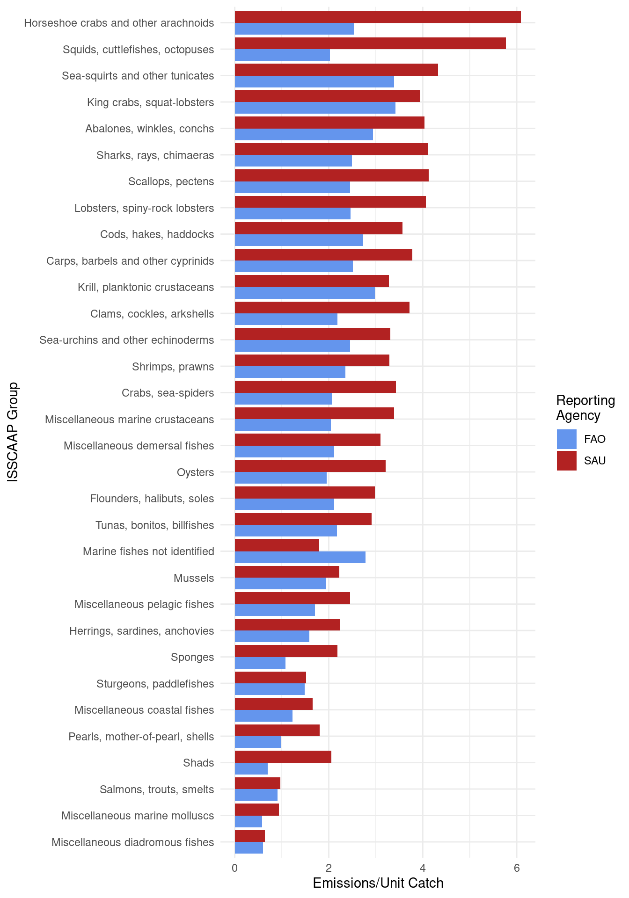

7 SAU Validation
This chapter describes how we validated our findings by comparison with Sea Around Us catch data.
7.1 Datasets
Sea Around Us data was downloaded for each FAO Region (18, 21, 27, 31, 34, 37, 41, 47, 48, 51, 57, 58, 61, 67, 71, 77, 81, 87, and 88).
7.2 Packages
- {tidyverse}
- {janitor}
7.3 Methods
Sea Around US (SAU) data was prepped using the same methods as FAO catch data (see “FAO Data Assembly”).
check that SAU doesn’t contain mammals, plants, etc. need to filter for human consumption and industrial
7.4 Results
7.4.1 Overall Comparisons
[1] "FAO Catch Total: 329363271 MT."[1] "SAU Catch Total: 208274226 MT."[1] "SAU reports -121089045 more MT of catch."[1] "FAO emissions-per-unit-catch: 4.56."[1] "SAU emissions-per-unit-catch: 7.21."7.4.2 Comparisons by ISSCAAP Group
